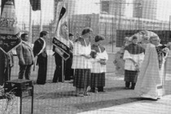

Chronik des SV Irsching-Knodorf
Am 27. November 1976 trafen sich auf Initiative von Johann Katzenmüller sportinteressierte Bürger aus Irsching und Knodorf im Warmbad und diskutierten die Problematik der Gründung eines Sportvereines. Nachdem Bürgermeister Schantz für die Gemeinde Irsching zusagte, gegebenenfalls eine entsprechende Sportanlage zu errichten und sich mit Herrn Kurt Beringer ein in der Vereinsführung erfahrener Mann fand, der sich bereit erklärte, das Amt des 1. Vorstandes zu übernehmen, waren die Grundlagen für die Gründung des Vereins vorhanden. In der Versammlung wurde eine kommissarische Vorstandschaft, an der Spitze mit Kurt Beringer als 1. Vorstand und Josef Schmid als 2. Vorstand, gebildet. 60 Personen wurden durch ihre Zustimmung zur Vereinsgründung und den Beitritt zum neuen Sportverein zu Gründungsmitgliedern. Die erste ordentliche Jahreshauptversammlung fand am 9. Januar 1977 statt. Bis dahin hatten sich dem Verein bereits 112 Mitglieder angeschlossen. Die kommissarische Vorstandschaft wurde bestätigt und um die Abteilungsleiter der neuen Abteilungen Tennis, Stockschießen und Gymnastik ergänzt. Der Spielbetrieb der Fußballabteilung unter Regie von Spielleiter Adolf Brunnhuber begann am 26. Februar 1977. Das erste Freundschaftsspiel beim HSV Rottenegg ging mit 1 : 5 verloren. Weitere Freundschaftsspiele - auch im Rahmen von Pokalturnieren -schlossen sich an. In den Punktspielbetrieb griff man in der Saison 1977/78 mit einer ersten und zweiten Mannschaft sowie einer A- und C-Jugend-Mannschaft ein. In dieser ersten Saison erreichte die erste Mannschaft auf Anhieb einen 6. Platz in der C-Klasse Süd des Spielkreises Donau/lIm. Nachdem zunächst nur der Sportplatz an der Keltenstraße zur Verfügung stand, erfolgte am 30. August 1977 der erste Spatenstich für die neue Sportanlage am Warmbad. Bereits Anfang November waren die Asphaltbahnen für die Stockschützen hergestellt, so dass auch diese Abteilung ihre Aktivitäten aufnehmen konnte. Im März 1978 wurden dann die umfangreichen Arbeiten am neuen Sportgelände fortgesetzt. Bis zur Fertigstellung leisteten Mitglieder und Gönner des Vereins rd. 4200 unentgeltliche Arbeitsstunden.Insgesamt wendete die Gemeinde für die Sportanlage ( ohne Grunderwerb ) rd. 690.000 DM auf. Die Anlagen wurden dem Sportverein langfristig verpachtet. Am 3/4. August 1978 konnte die neue Sportanlage durch H. H. Pater Ethelbert Schwarz geweiht werden. Als Schirmherr fungierte Altbürgermeister Schantz. Zahlreiche Ehrengäste konnten in hierzu aufgestellten Festzeit begrüßt werden. Das erste Spiel auf dem „neuen“ Rasen trug die Schülermannschaft aus. Die 1. Mannschaft bestritt ein Pokalturnier, wobei die Gymnastikabteilung Einlagen bot. Die Stockschützen und Tennisspieler ermittelten ihre Vereinsmeister. Im Oktober 1978 wurde im Vereinsausschuss erstmals über die Anschaffung einer Vereinsfahne beraten. Nachdem sich 1. Vorstand Kurt Beringer zur Stiftung der Fahne bereit erklärte, konnte der Auftrag kurz darauf an die Fahnenstickerei Kössinger in Schierling erteilt werden. Nach umfangreichen Vorarbeiten durch den Festausschuss konnte am 28. /29. Juli 1979 die Fahnenweihe durchgeführt werden. Als Patenverein fungierte der TSV Großmehring. 43 weitere Vereine und viele Festgäste konnten zum Umzug und im Festzeit begrüßt werden. Die Schirmherrschaft hatte Landrat Dr. Scherg übernommen. Mit einem schönen Zinnkrug bedankte sich der Verein beim Stifter Kurt Beringer. Größere Maßnahmen in den folgenden Jahren stellten noch der Bau einer überdachten Sitzgelegenheit 1 980 und der Neubau einer Gerätegarage 1 984 dar. 1991/92 konnte - nachdem die Stadt den notwendigen Grund eingetauscht hatte - ein Trainingsplatz errichtet und danach der Sportplatz an der Keltenstraße an die Stadt zurückgegeben werden. 1996 wurde dann die Gerätegarage am Warmbad sowie die Umkleideräume an den Tennisplätzen gebaut. Im Jubiläumsjahr 2001 kaufte der Verein mit einer großzügigen Förderung durch die Stadt Vobburg einen neuen Rasenmäher für die Sportplatzpflege. Der Verein zählt heute rd. 470 Mitglieder, die sich in den vier Abteilungen Fußball, Tennis, Stockschießen und Gymnastik sportlich betätigen. Hierunter befinden sich rd. 100 Kinder und Jugendliche. Am 30. August 1977 war der erste Spatenstich für die Sportanlage erfolgt. Bereits AnfangNovember waren die Asphaltbahnen für die Stockschützen fertiggestellt. Im März 1978 wurden die umfangreichen Arbeiten fortgeführt und bis zur Einweihung vollendet. Rd. 4200 unentgeltliche Arbeitsstunden wurden hierzu von Mitgliedern und Gönnern des Vereins geleistet. Die Gemeinde lrsching unter Führung von Bürgermeister Josef Schantz, der auch die Schirmherrschaft für die Einweihung übernahm, ließ sich die Sportanlage (ohne Grunderwerb) rd. 690.000 DM kosten.